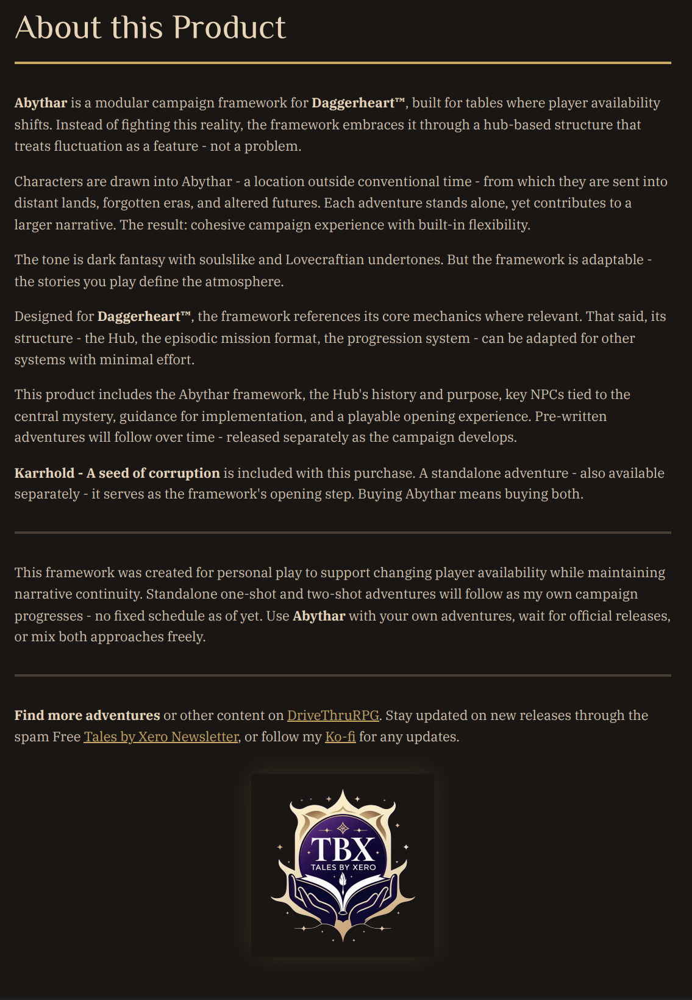

01 / World detail
First, give the campaign a strange center.
Harmony makes the setting memorable before the visitor ever reaches the mechanics. The text clarifies why this detail matters to play.
Inspect full artwork
Abythera / evidence pattern study
Each direction uses the same four Abythera assets. The question is only how a visitor finds, scans, and opens them when a product has several real things worth showing.

Direction 01 / Recommended
The page keeps moving vertically, but the supporting material does not become four or five repeated screen-length chapters. Choose a proof, inspect it, then continue reading.
Product document
An actual product page that shows the campaign premise, the hub model, and practical support for a changing group in one working view.
A complete, uncropped page rather than a decorative screenshot.

Direction 02 / Editorial sequence
This is the high-impact route: every asset earns a dedicated narrative beat. It is cinematic and clear, but it deliberately makes the detail page longer as proof grows.
01 / World detail
Harmony makes the setting memorable before the visitor ever reaches the mechanics. The text clarifies why this detail matters to play.
Inspect full artwork02 / Framework
The first document is a direct answer to a practical question: what does the framework actually give a group between one session and the next?
Inspect full page03 / Included mission
Karrhold becomes more than a line in the product description. Its quick guide demonstrates the useful material a GM can keep nearby at the table.
Inspect full page
04 / Product promise
The overview page closes the sequence with the scope, the flexible campaign premise, and the direct statement that Karrhold is included.
Inspect full page
Direction 03 / Compact proof index
This is the shortest route through the material. The grid makes breadth immediately visible, while a full-size dialog handles the detail that a smaller document preview cannot carry.